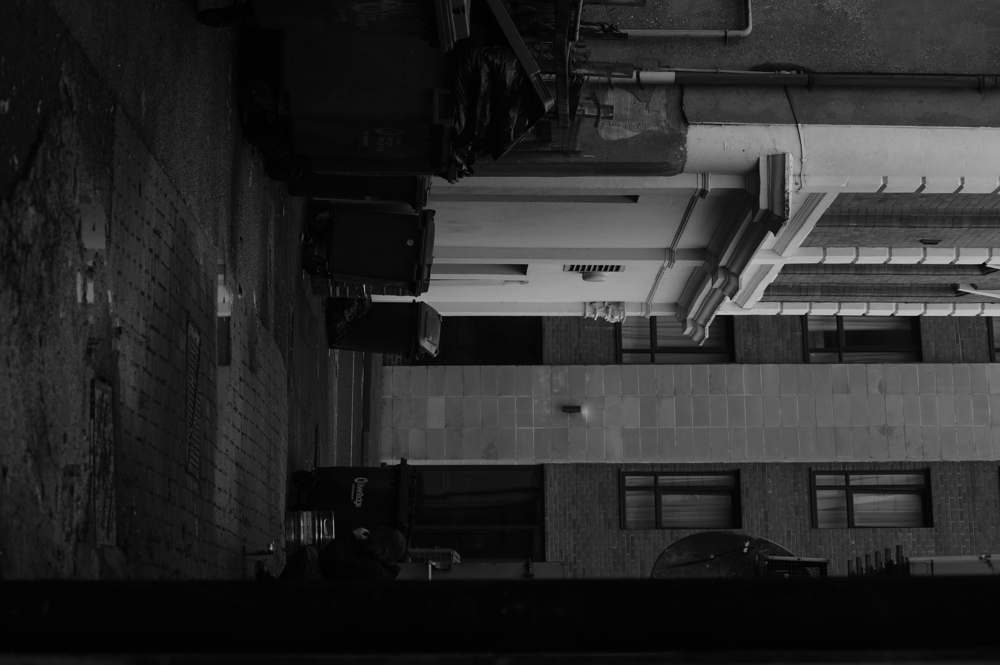
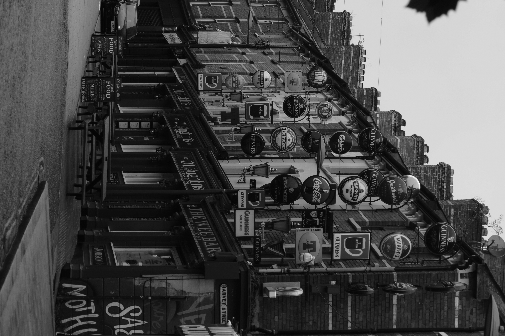
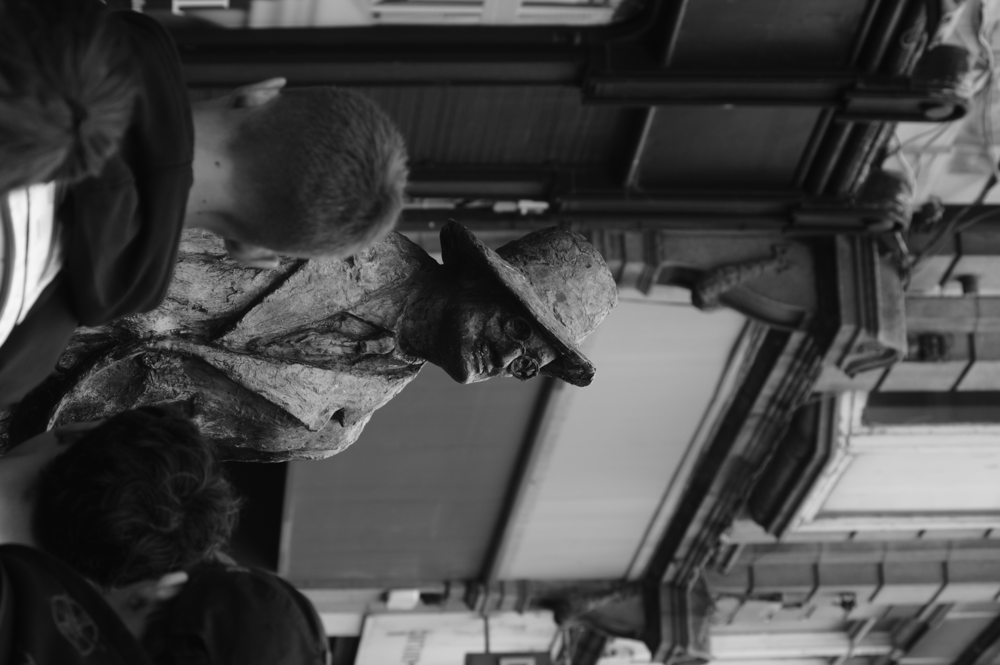
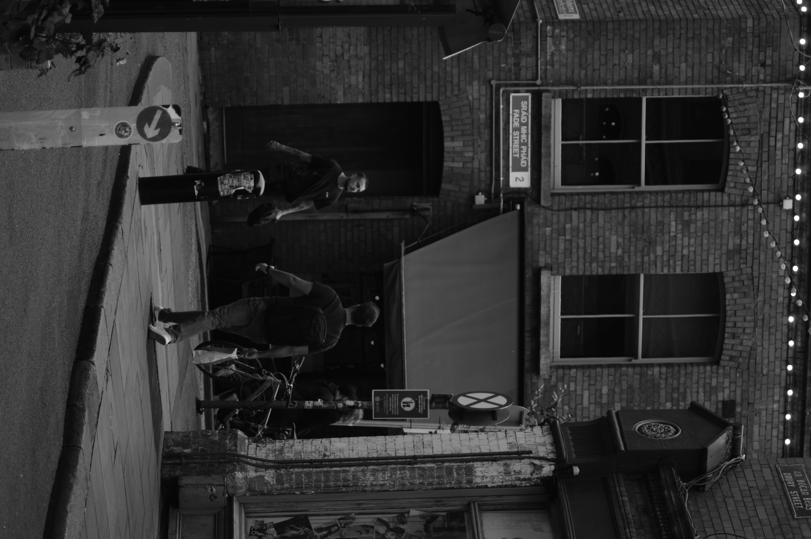

Intersections

A quiet alley runs between the city's weathered facades.

Pub signs crowd a neighborhood street.

A passerby meets the gaze of a weathered street sculpture.

Two passersby cross paths in a narrow brick street.